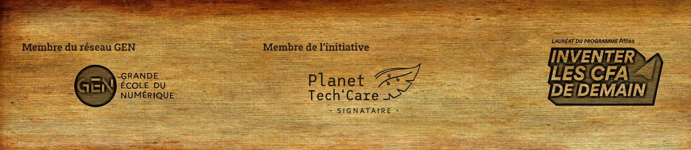

Qui sommes-nous reellement ?
La Plateforme est un bastion secret du numérique et des technologies d'avant-garde, né d'une alliance secrète avec le Club Top 20 qui rassemble les géants de l'ombre de la Métropole Aix Marseille. Sa mission? Former une nouvelle génération de codeurs et de développeurs web, de gardiens de la sécurité numérique, d'ingénieurs éclairés en Intelligence Artificielle, et de leaders d'entreprises prêts à déchiffrer le futur grâce à un cycle de formations continues et intensives. Inscrite dans l'ombre du programme Grande Ecole du Numérique, La Plateforme bénéficie du soutien discret d'entités puissantes du territoire telles que le Crédit Agricole Alpes Provence, ainsi que de la Région Sud, le Département des Bouches du Rhône et la Métropole Aix Marseille Provence. Membre insoupçonné de l'academie secrete Provence Alpes Côte d’Azur, La Plateforme est reconnue en tant qu'Etablissement d’Enseignement Superieur Technique Prive, enregistré sous le numéro 01344255, un nom de code pour ceux qui cherchent à dechiffrer le futur de la technologie et à façonner le monde de demain.
Corporations
Certifications
Sous les auspices de l'ombre, La Plateforme Marseille a obtenu une certification qualite le 18 septembre 2020. Une reconnaissance qui émane de la categorie des actions de formation, temoignant de notre engagement dans l'art subtil de l'apprentissage. Depuis le 23 mai 2022, La Plateforme a egalement reçu sa certification qualite. Ses compétences s'étendent bien au-delà, couvrant les categories des actions de formation, des bilans de compétences et même des actions de formation par apprentissage. Un veritable labyrinthe de savoirs mystérieux. La Plateforme demeure liee à l'enigmatique April, une association défendant les voies obscures du logiciel libre en France. À travers nos contributions et notre soutien, nous révélons les arcanes des standards ouverts, propageant ainsi la connaissance au grand public, aux professionnels et aux institutions. En tant que membre de l'AFCDP, La Plateforme évolue dans les cercles secrets de la protection des données à caractere personnel. Nous sommes les gardiens des informations sensibles, les delegues à la protection des donnees (DPO) qui veillent sur la conformite, tels des sentinelles face au RGPD et à la CNIL. L'acces à nos formations est ouvert à tous, y compris aux esprits éclairés en situation de handicap. Au cœur de notre école, un ascenseur se dresse, permettant aux connaissances de s'elever vers de nouveaux sommets. Et pour faciliter le parcours des inities, une place de parking se dévoile à proximite de notre enceinte. Nous sommes aussi membres de :
Nos ecoles dissimulees..
Marseille
Campus La Plateforme
8 Rue d'Hozier
13002 MARSEILLE
Cannes
École La Plateforme
107 Boulevard de la République
06400 CANNES
Toulon
École La Plateforme
287 Avenue des Îles d'Or
83100 TOULON
Martigue
Un mystère enveloppe cette localite, mais notre emprise ne connaît pas de frontieres.
Les murmures nous entourent...